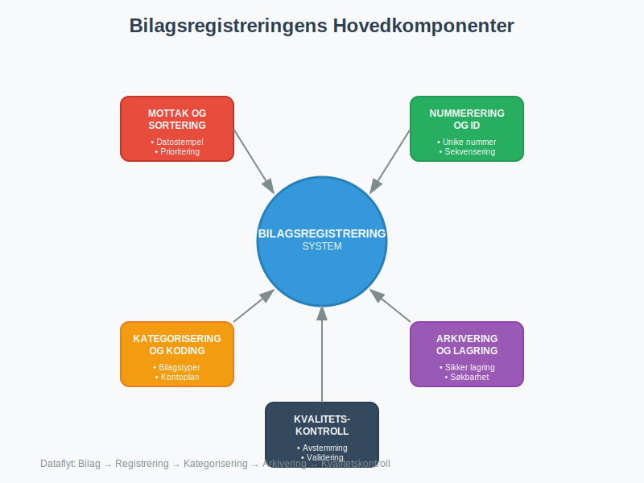
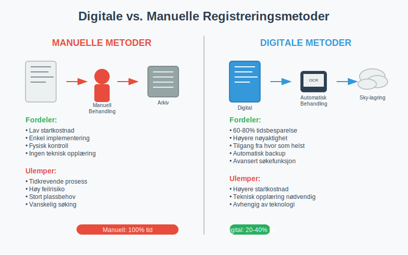
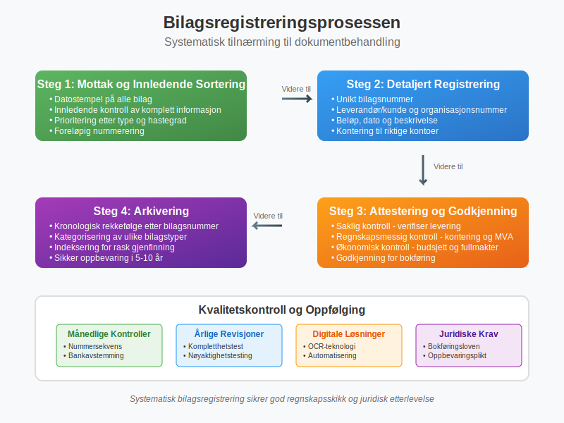

Bilagsregistrere er den systematiske prosessen med å registrere, organisere og arkivere alle regnskapsbilag i en bedrift. Dette omfatter alt fra fakturaer og kvitteringer til banktransaksjoner og lønnsbilag. Korrekt bilagsregistrering er grunnleggende for å opprettholde god regnskapsskikk og sikre at alle finansielle transaksjoner er dokumentert og sporbare.
(For en generell oversikt over bilag i regnskap, se Bilag.)
Bilagsregistrering er ikke bare en administrativ oppgave, men en juridisk forpliktelse som reguleres av bokføringsloven. Prosessen sikrer at bedriften kan dokumentere alle sine finansielle aktiviteter overfor revisor, skattemyndigheter og andre interessenter.
Seksjon 1: Bilagsregistreringens Komponenter
Effektiv bilagsregistrering består av flere kritiske komponenter som må fungere sammen for å sikre komplett dokumentasjon av bedriftens finansielle aktiviteter.

1.1 Bilagstyper som Må Registreres
Alle bedrifter må registrere følgende hovedkategorier av bilag:
- Salgsdokumenter: Fakturaer, kreditnotaer, kvitteringer
- Kjøpsdokumenter: Leverandørfakturaer, innkjøpsordrer, leveringsbekreftelser
- Bankdokumenter: Banktransaksjoner, kontoutskrifter, bankavstemming
- Lønnsbilag: Lønnslipper, A-meldinger, arbeidsgiveravgift
- MVA-dokumenter: MVA-oppgaver, avgiftsbilag
1.2 Registreringskrav og Nummerering
Hvert bilag må tildeles et unikt bilagsnummer som følger en logisk sekvens. Dette sikrer sporbarhet og gjør det enkelt å finne spesifikke transaksjoner senere.
| Bilagstype | Nummerserie | Eksempel | Beskrivelse |
|---|---|---|---|
| Salgsfakturaer | SF-001 til SF-999 | SF-245 | Utgående fakturaer til kunder |
| Kjøpsfakturaer | KF-001 til KF-999 | KF-156 | Innkommende fakturaer fra leverandører |
| Kassebilag | KB-001 til KB-999 | KB-089 | Kontantutbetalinger og -innbetalinger |
| Bankbilag | BB-001 til BB-999 | BB-234 | Banktransaksjoner og overføringer |
| Lønnsbilag | LB-001 til LB-999 | LB-012 | Lønnsutbetalinger og relaterte avgifter |
Seksjon 2: Digitale vs. Manuelle Registreringsmetoder
Moderne bedrifter kan velge mellom tradisjonelle manuelle metoder og avanserte digitale løsninger for bilagsregistrering. Valget påvirker både effektivitet og nøyaktighet i regnskapsføringen.

2.1 Manuelle Registreringsmetoder
Tradisjonell papirbasert registrering innebærer fysisk håndtering og arkivering av alle bilag:
Fordeler med Manuell Registrering:
- Lav startkostnad: Krever kun grunnleggende kontormateriell
- Enkel implementering: Ingen teknisk opplæring nødvendig
- Fysisk kontroll: Direkte tilgang til originaldokumenter
Ulemper med Manuell Registrering:
- Tidkrevende: Manuell sortering og arkivering tar mye tid
- Feilrisiko: Høyere sannsynlighet for menneskelige feil
- Plassbehov: Krever betydelig fysisk lagringsplass
- Søkeutfordringer: Vanskelig å finne spesifikke bilag raskt
2.2 Digitale Registreringsløsninger
Digitale bilagsregistreringssystemer automatiserer store deler av prosessen og integrerer med regnskapssystemer:
Hovedfunksjoner i Digitale Systemer:
- OCR-teknologi: Automatisk lesing og registrering av bilagsdata
- Automatisk kategorisering: Intelligente algoritmer som klassifiserer bilagstyper
- Integrasjon: Direkte kobling til regnskapssystemer og ERP-løsninger
- Søkefunksjonalitet: Avanserte søkemuligheter basert på innhold og metadata
Fordeler med Digital Registrering:
- Tidsbesparelse: Automatisering reduserer manuelt arbeid med 60-80%
- Høyere nøyaktighet: Redusert risiko for menneskelige feil
- Bedre tilgjengelighet: Tilgang til bilag fra hvor som helst
- Miljøvennlig: Redusert papirforbruk og fysisk lagring
Seksjon 3: Juridiske Krav og Oppbevaringsplikt
Bilagsregistrering er regulert av bokføringsloven og tilhørende forskrifter. Bedrifter må følge strenge krav til dokumentasjon og oppbevaring.
3.1 Lovpålagte Oppbevaringskrav
| Dokumenttype | Oppbevaringstid | Spesielle krav |
|---|---|---|
| Regnskapsbilag | 5 år | Må være tilgjengelige for kontroll |
| Årsregnskap | 10 år | Inkludert noter og revisjonsberetning |
| Lønnsbilag | 5 år | Inkludert A-meldinger og lønnsspecifikasjoner |
| MVA-dokumenter | 10 år | Alle MVA-oppgaver og støttedokumenter |
| Kontrakter | Kontraktens varighet + 3 år | Viktige avtaler og kontrakter |
3.2 Krav til Bilagskvalitet
For at et bilag skal være gyldig i regnskapssammenheng, må det oppfylle følgende krav:
- Lesbarhet: Tekst og tall må være klart lesbare
- Komplett informasjon: Alle nødvendige opplysninger må være tilstede
- Autentisitet: Bilag må kunne verifiseres som ekte
- Sporbarhet: Klar kobling mellom bilag og regnskapsføring
Seksjon 4: Bilagsregistreringsprosessen Steg-for-Steg
En systematisk tilnærming til bilagsregistrering sikrer at ingen dokumenter går tapt og at alle transaksjoner blir korrekt behandlet.

Steg 1: Mottak og Innledende Sortering
Alle innkommende bilag må umiddelbart registreres ved mottak:
- Datostempel: Påfør mottaksdato på alle fysiske bilag
- Innledende kontroll: Verifiser at bilag er komplette og lesbare
- Prioritering: Sorter etter type og hastegrad
- Foreløpig nummerering: Tildel midlertidig referansenummer
Steg 2: Detaljert Registrering
For hvert bilag må følgende informasjon registreres:
- Bilagsnummer: Unikt identifikasjonsnummer
- Dato: Både bilagsdato og registreringsdato
- Leverandør/kunde: Fullstendig navn og organisasjonsnummer
- Beløp: Totalbeløp og eventuell MVA
- Beskrivelse: Kort beskrivelse av transaksjonen
- Kontering: Hvilke kontoer som skal belastes/krediteres
Steg 3: Attestering og Godkjenning
Alle bilag må gjennom en attesteringsprosess før de kan bokføres:
- Saklig kontroll: Verifiser at varen/tjenesten er levert
- Regnskapsmessig kontroll: Kontroller kontering og MVA-behandling
- Økonomisk kontroll: Sikre at kjøpet er innenfor budsjett og fullmakter
Steg 4: Arkivering
Etter godkjenning må bilag arkiveres systematisk:
- Kronologisk rekkefølge: Sorter etter bilagsnummer eller dato
- Kategorisering: Separer ulike bilagstyper
- Indeksering: Opprett søkbare registre for rask gjenfinning
- Sikker oppbevaring: Beskytt mot skade, tyveri og tap
Seksjon 5: Kvalitetskontroll og Avstemming
Regelmessig kvalitetskontroll sikrer at bilagsregistreringen opprettholder høy standard og at alle transaksjoner er korrekt dokumentert.
5.1 Månedlige Kontrollrutiner
Månedlig avstemming bør inkludere følgende kontroller:
- Nummersekvens: Verifiser at alle bilagsnummer er i bruk uten hull
- Bankavstemming: Sammenlign registrerte banktransaksjoner med kontoutskrifter
- Leverandøravstemming: Kontroller utestående fakturaer mot leverandørenes oppgaver
- MVA-avstemming: Sikre at alle MVA-pliktige transaksjoner er korrekt registrert
5.2 Årlige Revisjoner
En grundig årlig gjennomgang av bilagsregistreringen bør omfatte:
- Kompletthetstest: Verifiser at alle transaksjoner har tilhørende bilag
- Nøyaktighetstesting: Kontroller et utvalg bilag mot regnskapsføringen
- Oppbevaringskontroll: Sikre at alle bilag er tilgjengelige og i god stand
- Systemvurdering: Evaluere effektiviteten av registreringsprosessene
Seksjon 6: Teknologiske Løsninger og Automatisering
Moderne teknologi har revolusjonert bilagsregistrering ved å automatisere mange manuelle prosesser og redusere feilmarginer betydelig.
6.1 OCR og Intelligent Dokumentgjenkjenning
Optical Character Recognition (OCR) teknologi kan automatisk lese og registrere informasjon fra bilag:
Hovedfunksjoner:
- Automatisk dataekstraksjon: Leser leverandørnavn, beløp, dato og andre nøkkeldata
- Intelligent kategorisering: Klassifiserer bilag basert på innhold og format
- Validering: Kontrollerer data mot forventede mønstre og regler
- Integrasjon: Sender data direkte til regnskapssystem
Nøyaktighetsrater:
- Trykte dokumenter: 95-99% nøyaktighet
- Håndskrevne notater: 70-85% nøyaktighet
- Strukturerte fakturaer: 98-99% nøyaktighet
6.2 Skybaserte Bilagsløsninger
Cloud-baserte systemer tilbyr fleksibilitet og skalerbarhet:
- Tilgjengelighet: Tilgang fra alle enheter med internettforbindelse
- Automatisk backup: Sikker lagring med redundans
- Skalerbarhet: Enkel utvidelse ved bedriftsvekst
- Kostnadseffektivitet: Reduserte IT-kostnader og vedlikehold
Seksjon 7: Beste Praksis for Effektiv Bilagsregistrering
Implementering av beste praksis sikrer optimal effektivitet og minimerer risiko for feil i bilagsregistreringen.
7.1 Organisatoriske Rutiner
Etabler klare rutiner for alle aspekter av bilagsbehandling:
Daglige Rutiner:
- Umiddelbar registrering: Registrer alle bilag samme dag som de mottas
- Prioritering: Behandle hastebilag først (lønn, forfallende fakturaer)
- Kvalitetskontroll: Utfør grunnleggende kontroller ved registrering
Ukentlige Rutiner:
- Kompletthetssjekk: Sikre at alle bilag for uken er registrert
- Oppfølging: Kontakt leverandører ved manglende eller ufullstendige bilag
- Arkivering: Flytt godkjente bilag til permanent arkiv
7.2 Personell og Kompetanse
Riktig kompetanse er kritisk for effektiv bilagsregistrering:
Nødvendig Kompetanse:
- Regnskapsforståelse: Grunnleggende kunnskap om regnskapsprinsipper
- Systemkunnskap: Ferdigheter i relevante programvarer
- Detaljorientering: Evne til nøyaktig dataregistrering
- Juridisk forståelse: Kunnskap om oppbevaringskrav og forskrifter
Opplæringsprogram:
- Introduksjonskurs: Grunnleggende bilagsbehandling og systemer
- Kontinuerlig utvikling: Regelmessig oppdatering på nye krav og teknologi
- Kvalitetssikring: Periodisk evaluering av arbeidskvalitet
7.3 Risikohåndtering
Identifiser og håndter potensielle risikoer i bilagsregistreringen:
Vanlige Risikoer:
- Tap av bilag: Implementer backup-rutiner og duplikatlagring
- Feilregistrering: Etabler kontrollmekanismer og dobbeltkontroll
- Forsinket behandling: Sett opp automatiske påminnelser og frister
- Sikkerhetsbrud: Implementer tilgangskontroll og kryptering
Seksjon 8: Fremtidige Trender og Utvikling
Bilagsregistrering utvikler seg kontinuerlig med nye teknologier og endrede forretningsbehov.
8.1 Kunstig Intelligens og Maskinlæring
AI-teknologi vil revolusjonere bilagsbehandling:
- Prediktiv kategorisering: Automatisk klassifisering basert på historiske data
- Anomalideteksjon: Identifisering av uvanlige transaksjoner eller feil
- Intelligent validering: Kryssreferanse mot multiple datakilder
- Automatisk kontering: Forslag til regnskapsføring basert på tidligere mønstre
8.2 Blockchain og Distribuert Lagring
Blockchain-teknologi kan forbedre sikkerhet og sporbarhet:
- Uforanderlige poster: Bilag kan ikke endres etter registrering
- Desentralisert lagring: Redusert risiko for datatap
- Automatisk verifisering: Smart contracts for automatisk validering
- Forbedret tillit: Transparent og sporbar dokumenthistorikk
8.3 Integrerte Økosystemer
Helintegrerte løsninger vil knytte sammen alle forretningsprosesser:
- End-to-end automatisering: Fra bestilling til betaling uten manuell inngripen
- Sanntidsrapportering: Øyeblikkelig oppdatering av finansielle rapporter
- Prediktiv analyse: Prognoser basert på historiske bilagsdata
- Mobil tilgjengelighet: Fullstendig funksjonalitet på mobile enheter
Effektiv bilagsregistrering er fundamentet for pålitelig regnskapsføring og finansiell rapportering. Ved å implementere systematiske prosesser, utnytte moderne teknologi og følge beste praksis, kan bedrifter sikre nøyaktig dokumentasjon av alle finansielle transaksjoner samtidig som de oppfyller juridiske krav og forbedrer operasjonell effektivitet.